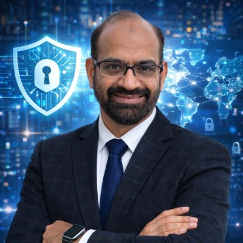
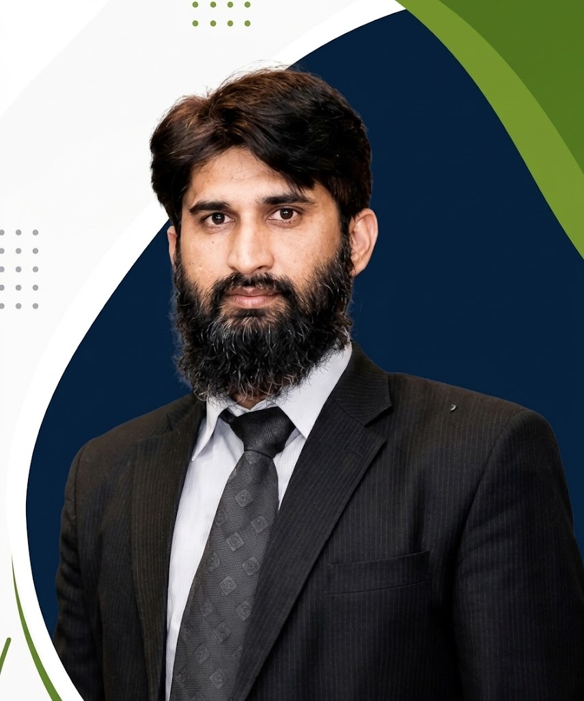
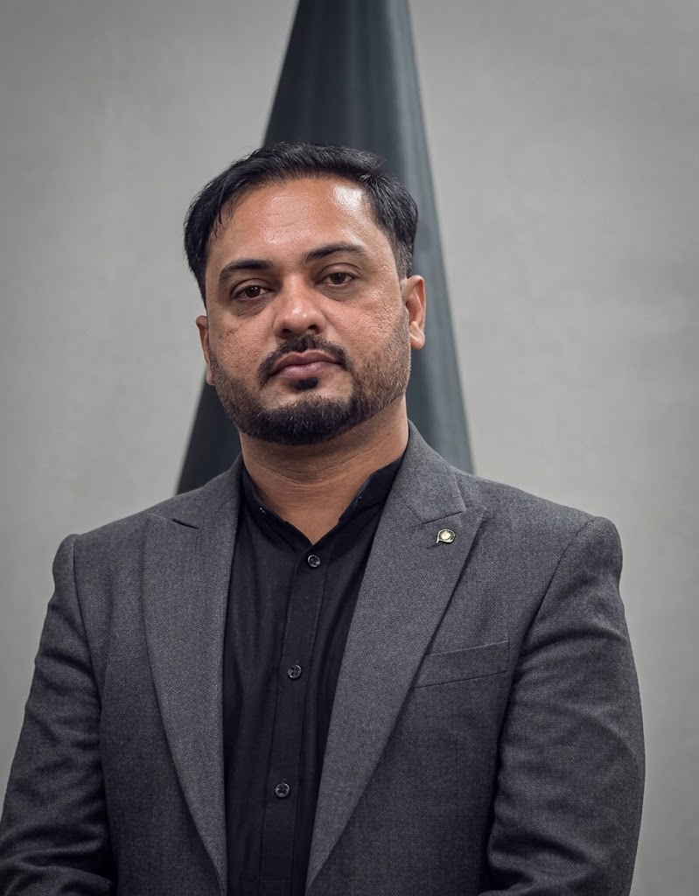

Chapter Leadership
Our Leadership Team
Our dedicated leadership team works tirelessly to develop this all-inclusive community, serving as a force for good across Pakistan's cybersecurity landscape.

Saad Moten
President, ISC² Islamabad Chapter
Committed to building and empowering the cybersecurity community. Mentors professionals, creates cross-border collaborations, and advocates for global best practices in information security.
Honored as a member of the ISC² Global Achievement Awards Committee 2025 and an invited participant in the ISC² Global Security Congress, reflecting global recognition of contributions to the field.
Holds industry-leading ISC² certifications including CISSP and CCSP.

Haroon ur Rashid
VP / Chair – Membership
Brings passion, dedication, and leadership to strengthen our membership community, enhance member engagement, and create greater value and opportunities for cybersecurity professionals.
An experienced specialist with 12 years in Information Security, excelling at secure network design, risk management, and system development. Instrumental in developing enterprise Business Continuity and Disaster Recovery plans.
Holds an MS in Information Security from NUST and is a certified professional with industry-leading credentials including CISSP, ISO 27001 Lead Auditor, and CEH.

Syed Salman Aziz
Treasurer
Brings vital financial and governance oversight to the chapter, ensuring sustainable growth while actively supporting strategic initiatives to foster a secure and vibrant community for all members.
A seasoned professional with over 10 years of experience in Business Continuity, Risk & Governance, Data Centers, and Telecommunication Network Management. He has a proven track record of delivering diverse projects that rigorously conform to emerging tech trends and international security standards.
Holds a formidable portfolio of industry-leading credentials, including ISC² CCSP and CC, alongside CCSK, JNCIE SP & Security, CCNP, and Lead Auditor certifications for ISO 22301, ISO 27001, and ISO 45001.